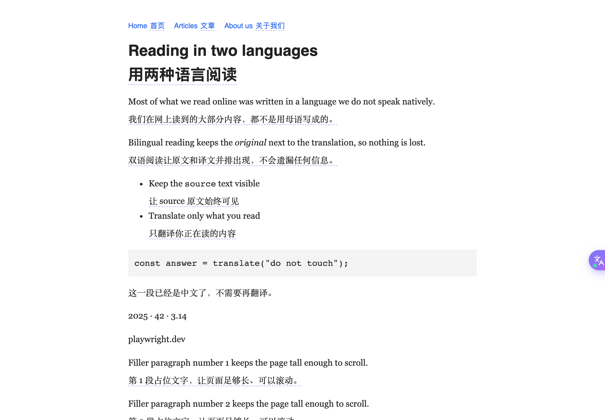

Glint 划词翻译 · Glint Translate
划词翻译与网页双语对照翻译，接入你自己的 OpenAI / Claude 兼容大模型。
Selection and bilingual page translation with your own OpenAI / Claude compatible model.
GitHub · 隐私政策 Privacy Policy · 反馈 Support

划词翻译与网页双语对照翻译，接入你自己的 OpenAI / Claude 兼容大模型。
Selection and bilingual page translation with your own OpenAI / Claude compatible model.
GitHub · 隐私政策 Privacy Policy · 反馈 Support
